We learned something about where we live and what we buy. Where do we get our income? Primarily, we earn by providing goods and services. Nationally, we produce about $11 trillion worth of goods and services. Broadly speaking, we spend that $11 trillion on personal consumption of goods and services, savings, and government. This, by the way, is often expressed as Y = C + I + G, which states that income (Y) is spent on consumption (C), investment (I, which comes from savings), and government (G). One can consume imports as well, so the short-term constraint looks like Y + M = C + I + G + X, where M is imports and X is exports.
How much does the United States produce? Economists measure output with the gross domestic product (GDP)The value of traded goods and services produced within the borders of the United States., which is the value of traded goods and services produced within the borders of the United States. GDP thus excludes output of Japanese factories owned by Americans but includes the output of U.S. factories owned by the Japanese.
Importantly, GDP excludes nontraded goods and services. Thus, unpaid housework is not included. If you clean your own home, and your neighbor cleans his or her home, the cleaning does not contribute to GDP. On the other hand, if you and your neighbor pay each other to clean each other’s homes, GDP goes up by the payments, even though the actual production of goods and services remains unchanged. Thus, GDP does not measure our total output as a nation, because it neglects unpaid services. Why does it neglect unpaid services? Primarily because we can’t readily measure them. Data on transactions are generated by tax information and reporting requirements imposed on businesses. For the same reason, GDP neglects illegal activities as well, such as illegal drug sales and pirated music sales. Thus, GDP is not a perfect measure of the production of our society. It is just the best measure we have.
Figure 4.25 "Output, consumption, investment, and government" shows the growth in GDP and its components of personal consumption, government expenditures, and investment. The figures are expressed in constant 1996 dollars—that is, adjusted for inflation. The figure for government includes the government’s purchases of goods and services—weapons, highways, rockets, pencils—but does not include transfer payments like social security and welfare programs. Transfer payments are excluded from this calculation because actual dollars are spent by the recipient, not by the government. The cost of making the transfer payments (e.g., printing and mailing the checks), however, is included in the cost of government.
Figure 4.25 Output, consumption, investment, and government
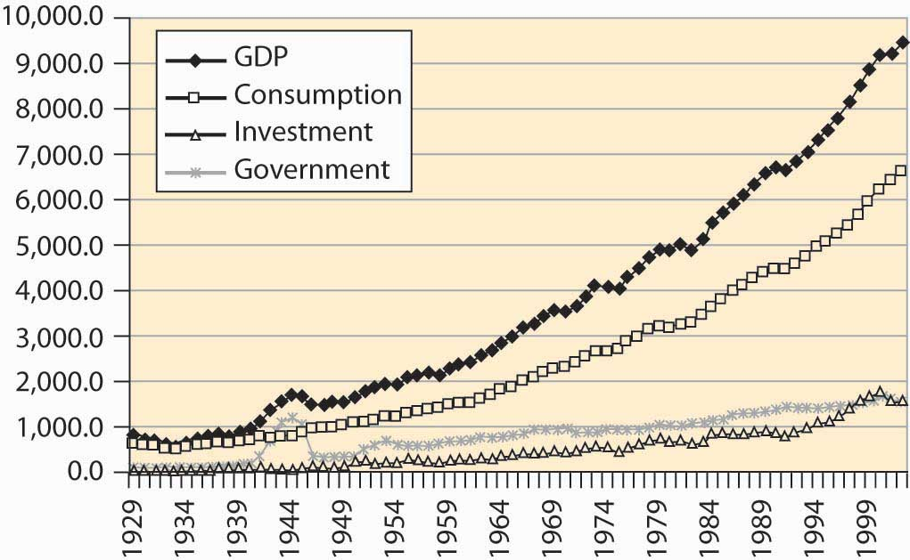It is often visually challenging to draw useful information from graphs like Figure 4.25 "Output, consumption, investment, and government", because economic activity is growing at a constant percentage. Consequently, economists often use a logarithmic scaleScale on which a straight line gives constant percentage growth. rather than a dollar scale. A logarithmic scale has the useful property that a straight line gives constant percentage growth. Consider a variable x that takes on values xt at time t. Define %∆x to be the percentage change:
Then
Thus, if the percentage change is constant over time, log(xt) will be a straight line over time. Moreover, for small percentage changes,
so that the slope is approximately the growth rate.The meaning of ≈ throughout this book is “to the first order.” Here that means Moreover, in this case the errors of the approximation are modest up to about 25% changes. Figure 4.26 "Major GDP components in log scale" shows these statistics with a logarithmic scale.
Figure 4.26 Major GDP components in log scale
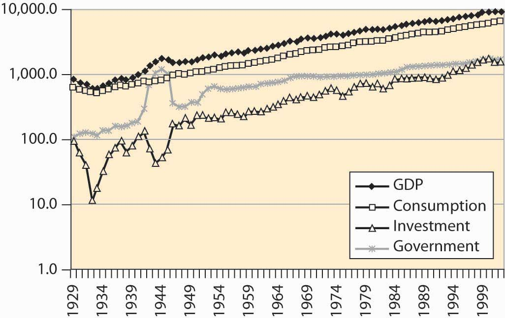Immediately noticeable is the approximately constant growth rate from 1950 to the present, because a straight line with a log scale represents a constant growth rate. In addition, government has grown much more slowly (although recall that transfer payments, another aspect of government, aren’t shown). A third feature is the volatility of investment—it shows much greater changes than output and consumption. Indeed, during the Great Depression (1929–1939), income fell somewhat, consumption fell less, government was approximately flat, and investment plunged to 10% of its former level.
Some of the growth in the American economy has arisen because there are more of us. Double the number of people, and consume twice as many goods, and individually we aren’t better off. How much are we producing per capita, and how much are we consuming?
U.S. output of goods, services, and consumption has grown substantially over the past 75 years, a fact illustrated in Figure 4.27 "Per capita income and consumption". In addition, consumption has been a steady percentage of income. This is more clearly visible when income shares are plotted in Figure 4.28 "Consumption, investment, and government (% GDP)".
Figure 4.27 Per capita income and consumption
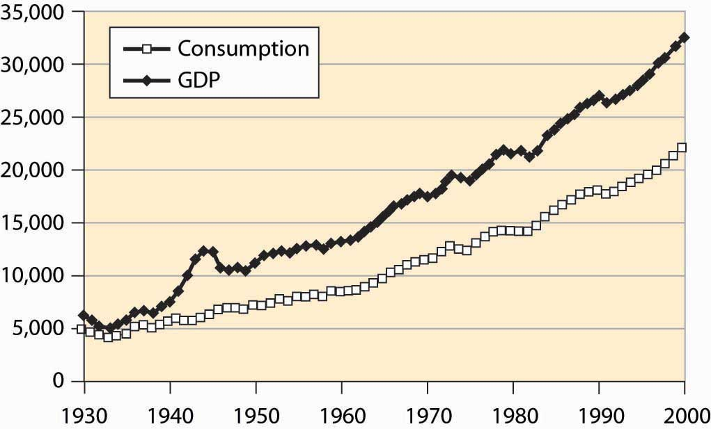Figure 4.28 Consumption, investment, and government (% GDP)
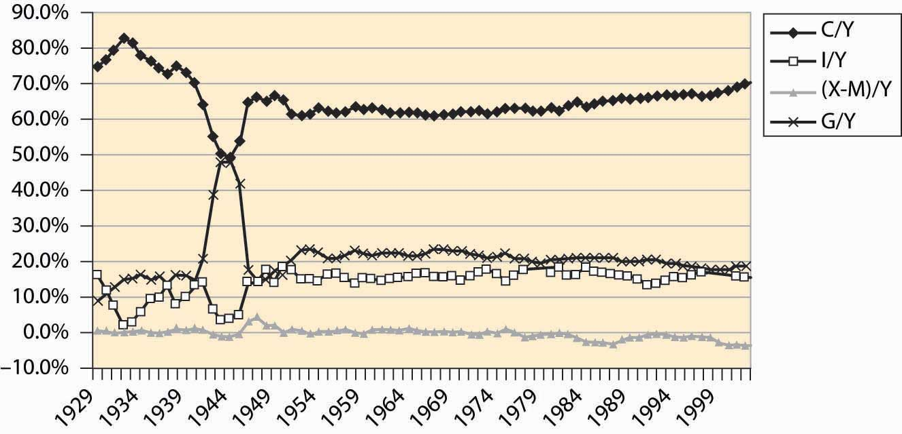Consumption was a very high portion of income during the Great Depression because income itself fell. Little investment took place. The wartime economy of World War II reduced consumption to below 50% of output, with government spending a similar fraction as home consumers. Otherwise, consumption has been a relatively stable 60%–70% of income, rising modestly during the past 20 years, as the share of government shrank and net imports grew. Net imports rose to 4% of GDP in 2001.
The most basic output of our economic system is food, and the U.S. economy does a remarkable job producing food. The United States has about 941 million acres under cultivation to produce food, which represents 41.5% of the surface area of the United States. Land use for agriculture peaked in 1952, at 1,206 million acres, and has been dwindling ever since, especially in the northeast where farms are being returned to forest through disuse. Figure 4.29 "U.S. agricultural output, 1982 constant dollars" shows the output of agricultural products in the United States, adjusted to 1982 prices.
Figure 4.29 U.S. agricultural output, 1982 constant dollars
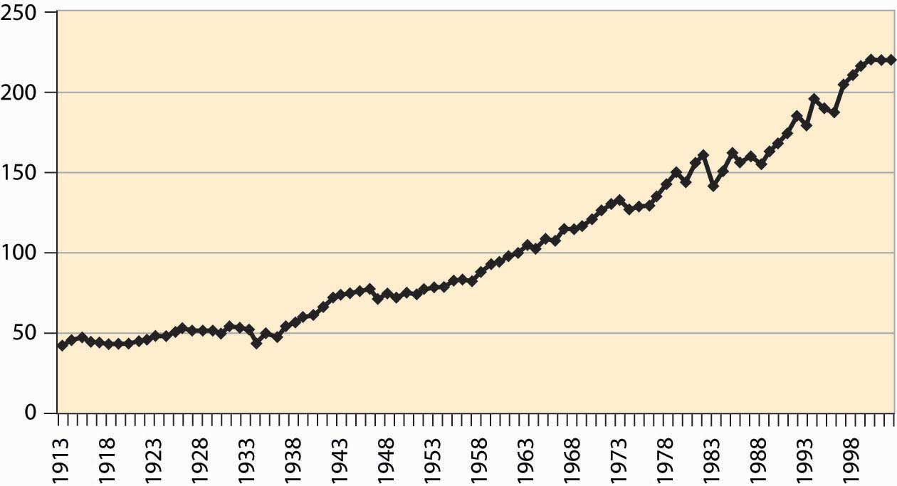The growth in output is more pronounced when viewed per worker involved in agriculture in Figure 4.30 "Agricultural output, total and per worker (1982 dollars, log scale)".
Figure 4.30 Agricultural output, total and per worker (1982 dollars, log scale)
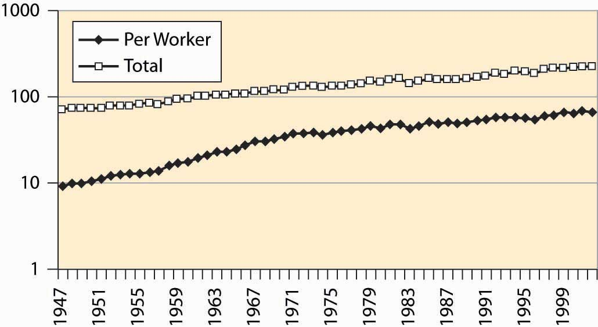Where do we work? Economists divide production into goods and services. Goods are historically divided into mining, construction, and manufacturing. Mining includes production of raw materials of all kinds, including metals, oil, bauxite, and gypsum. Construction involves production of housing and business space. Manufacturing involves the production of everything from computers to those little chef’s hats that are placed on turkey legs. Figure 4.31 "Major nonagricultural sectors of U.S. economy (% GDP)" describes the major sectors of the U.S. economy. Because the data come from firms, agriculture is excluded, although goods and services provided to farms would be included.
Figure 4.31 Major nonagricultural sectors of U.S. economy (% GDP)
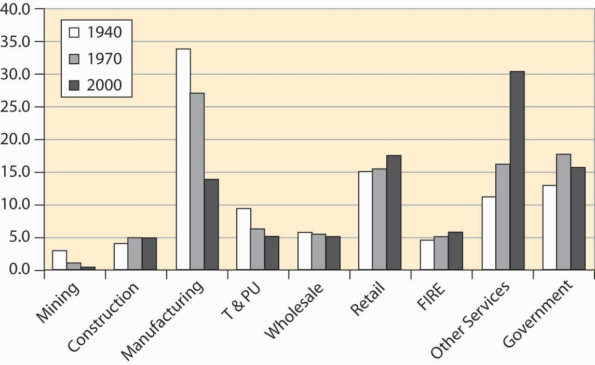Mining has diminished as a major factor in the U.S. economy, a consequence of the growth of other sectors and the reduction in the prices for raw materials. Contrary to many popular predictions, the prices of raw materials have fallen even as output and population have grown. We will see later in this book that the fall in prices of raw materials—ostensibly in fixed supply given the limited capacity of the earth—means that people expect a relative future abundance, either because of technological improvements in their use or because of large as yet undiscovered pools of the resources. An example of technological improvements is the substitution of fiber optic cable for copper wires. An enormous amount of copper has been recovered from telephone lines, and we can have more telephone lines and use less copper than was used in the past.
Manufacturing has become less important for several reasons. Many manufactured goods cost less, pulling down the overall value. In addition, we import more manufactured goods than in the past. We produce more services. T&PU stands for transportation and public utilities, and includes electricity and telephone services and transportation including rail and air travel. This sector has shrunk as a portion of the entire economy, although the components have grown in absolute terms. For example, the number of airplane trips has grown dramatically, as illustrated in Figure 4.32 "Air travel per capita".
Figure 4.32 Air travel per capita
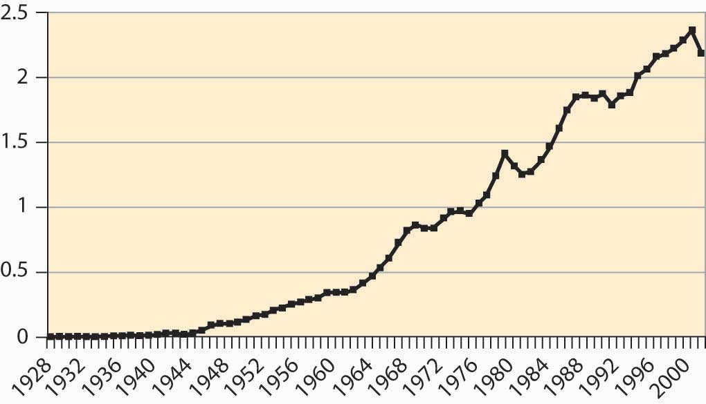Electricity production has risen dramatically, as Figure 4.33 "Electricity production (M kwh)" shows.
Figure 4.33 Electricity production (M kwh)
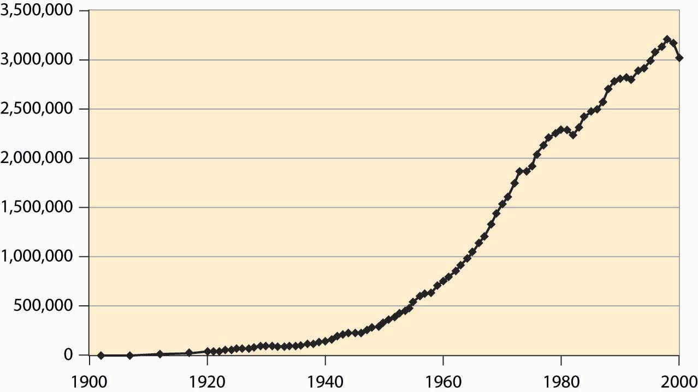However, energy use more generally has not grown as much, just doubling over the postwar period, which is illustrated in Figure 4.34 "Energy use (quadrillion BTUs)".
Figure 4.34 Energy use (quadrillion BTUs)
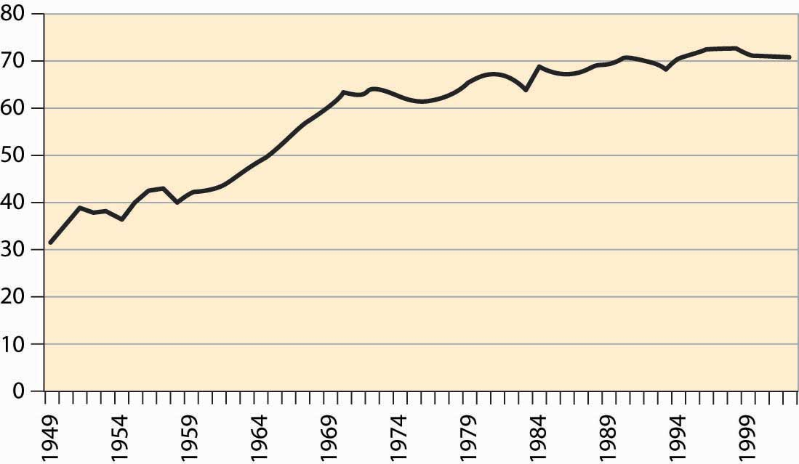The number of automobiles per capita in the United States peaked in the early 1980s, which looks like a reduction in transportation since then. However, we still drive more than ever, suggesting the change is actually an increase in the reliability of automobiles. Both of these facts are graphed in Figure 4.35 "Cars per thousand population and miles driven per capita", with miles on the left axis and cars per thousand on the right.
Figure 4.35 Cars per thousand population and miles driven per capita
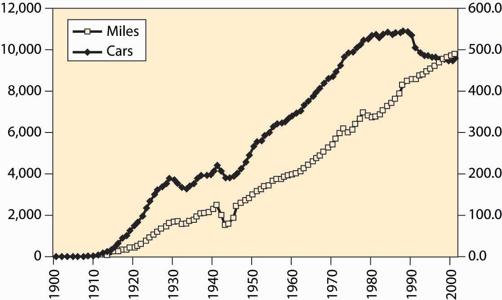The cost of selling goods—wholesale and retail costs—remains relatively stable, as does “FIRE,” which stands for finance, insurance, and real estate costs. Other services, ranging from restaurants to computer tutoring, have grown substantially. This is the so-called service economy that used to be in the news frequently, but is less so these days.
A bit more than 60% of the population works, with the historical percentage graphed in Figure 4.36 "Percentage of population employed (military and prisoners excluded)". The larger numbers in recent years are partially a reflection of the baby boom’s entry into working years, reducing the proportion of elderly and children in American society. However, it is partially a reflection of an increased propensity for households to have two income earners.
Figure 4.36 Percentage of population employed (military and prisoners excluded)
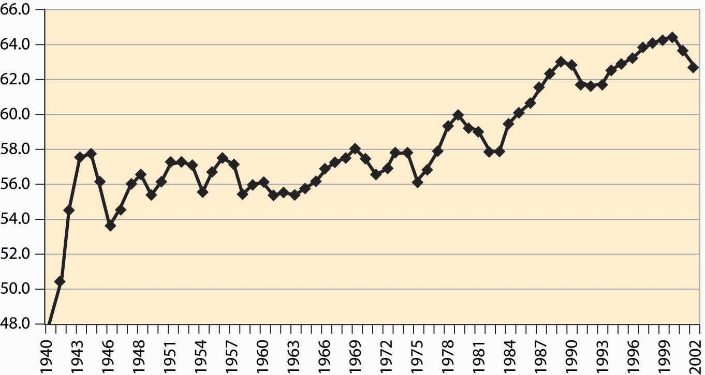Figure 4.37 Labor force participation rates, all women and married women
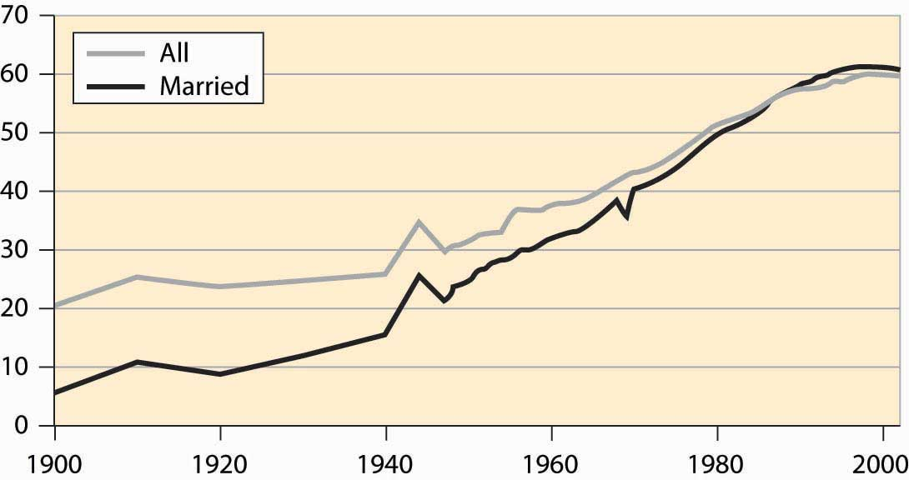Female participation in the labor force has risen quite dramatically in the United States, as shown in Figure 4.37 "Labor force participation rates, all women and married women". The overall participation rate has roughly tripled during the century and significantly exceeds the rate prevailing during World War II, when many women went to work. In addition, participation of married women has now risen above the level for unmarried women. The participation rate for single women is even higher, currently at 68%, and it is higher than the overall average participation rate of all residents. The difference is primarily elderly women, who are disproportionately more likely to be widowed rather than married or single, and who are less likely to be working.
Another sector of the economy that has been of focus in the news is national defense. How much do we spend on the military? In this century, the large expenditure occurred during World War II, when about 50% of GDP was spent by the government and 37% of GDP went to the armed forces. During the Korean War, we spent about 15% of GDP on military goods and less than 10% of GDP during the Vietnam War. The military buildup during Ronald Reagan’s presidency (1980–1988) increased our military expenditures from about 5.5% to 6.5% of GDP—a large percentage change in military expenditures, but a small diversion of GDP. The fall of the Soviet Union led the United States to reduce military expenditures, in what was called the “peace dividend,” but again the effects were modest, as illustrated in Figure 4.38 "Defense as a percentage of GDP".
Figure 4.38 Defense as a percentage of GDP
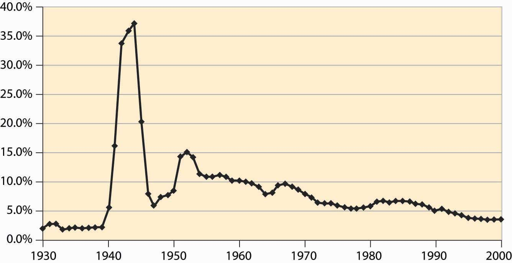Historically, defense represents the largest expenditure by the federal government. However, as we see, defense has become a much smaller part of the economy overall. Still, the federal government plays many other roles in the modern U.S. economy.